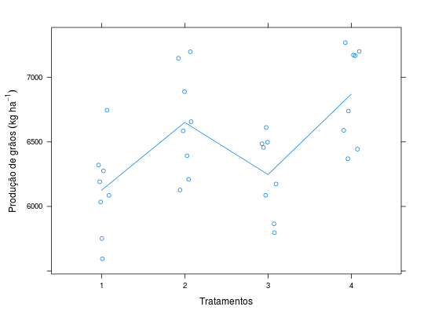

Dados de um experimento em DIC que visa estudar a adubação nitrogenada no arroz irrigado, com 4 tratamentos e 8 repetições. A resposta observada foi a produção de grãos de arroz irrigado, em kg ha\(^{-1}\).
Um data.frame com 24 observações e 3 variáveis, em que
adubreptprodZIMMERMANN (2004), pág. 54.
library(lattice) data(ZimmermannTb3.2.1)#> Warning: data set ‘ZimmermannTb3.2.1’ not foundstr(ZimmermannTb3.2.1)#> 'data.frame': 32 obs. of 3 variables: #> $ adub: Factor w/ 4 levels "1","2","3","4": 1 2 3 4 1 2 3 4 1 2 ... #> $ rep : num 1 1 1 1 2 2 2 2 3 3 ... #> $ prod: num 6276 7199 6457 7202 6035 ...unstack(x = ZimmermannTb3.2.1, form = prod ~ adub)#> X1 X2 X3 X4 #> 1 6276 7199 6457 7202 #> 2 6035 6890 6174 7173 #> 3 6086 6586 6612 7169 #> 4 5594 7149 6087 6590 #> 5 6321 6657 5797 6444 #> 6 6746 6210 5865 6740 #> 7 5751 6128 6498 6370 #> 8 6191 6393 6486 7270aggregate(prod ~ adub, data = ZimmermannTb3.2.1, FUN = function(x) { c(mean = mean(x), var = var(x)) })#> adub prod.mean prod.var #> 1 1 6125.00 126096.00 #> 2 2 6651.50 163466.00 #> 3 3 6247.00 96685.71 #> 4 4 6869.75 139744.21xyplot(prod ~ adub, data = ZimmermannTb3.2.1, type = c("p", "a"), jitter.x = TRUE, xlab = "Tratamentos", ylab = expression(Produção~de~grãos~(kg~ha^{-1})))